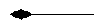
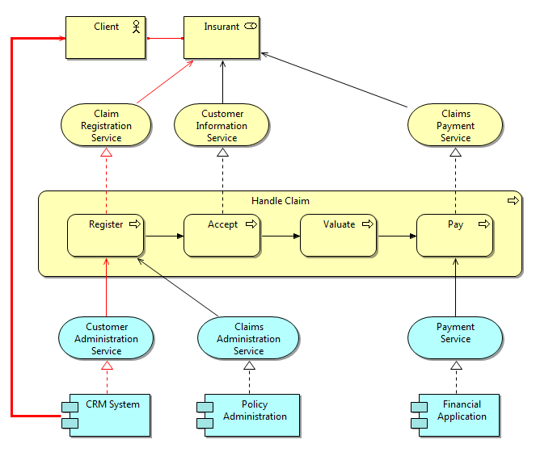

There are two main types of relationship in the ArchiMate language, structural and dynamic. The structural relationships are as follows:
| Association | Association models a relationship between objects that is not covered by another, more specific relationship. | |
| Access | The access relationship models the access of behavioural concepts to business or data objects. | |
| Used By | The used by relationship models the use of services by processes, functions, or interactions and the access to interfaces by roles, components, or collaborations. | |
| Realisation | The realisation relationship links a logical entity with a more concrete entity that realizes it. | |
| Assignment | The assignment relationship links units of behaviour with active elements (e.g., roles, components) that perform them, or roles with actors that fulfil them. | |
| Aggregation | The aggregation relationship indicates that an object groups a number of other objects. | |
| Composition | The composition relationship indicates that an object consists of a number of other objects. |  |
These structural relationships form an important category of relationships to describe coherence. They are listed here in ascending order by "strength": "Association" is the weakest structural relationship and "Composition" is the strongest. Part of the language definition is an abstraction rule that states that two relationships that join at an intermediate element can be combined and replaced by the weaker of the two.
With this rule, it is possible to determine the indirect, or "derived" relationships that exist between model elements without a direct relationship, which may be useful for, among other things, impact analysis. An example is shown below. Assume that we would like to know what the impact on the Client is if the CRM system fails. In this case, an indirect "used by" relationship (the thick arrow on the left) can be derived from this system to the Claim Registration Service (from the chain assignment -> used by -> realization -> used by -> realisation). No indirect (structural) relationship is drawn between the CRM system and the Claims Payment Service.

Example of a Derived Relationship
If structural relationships exist in the ArchiMate model these chains of relationships can be highlighted in red in the selected View. This option is available from the "Derived Relations -> Show Structural Chains" menu item from the main "View" menu or by right-clicking in a View. This option is a toggle and can be turned on and off for each separate View. If no structural chains of relationships exist in the model or if no structural connections have been added to the View then nothing is highlighted in red.
 Note - the structural chains are calculated from the relationships in the model. Thus, it is possible that the relationships that are actually shown in a View are a sub-set of those in the model.
Note - the structural chains are calculated from the relationships in the model. Thus, it is possible that the relationships that are actually shown in a View are a sub-set of those in the model.
To add a derived relationship to two elements in a View select the "Derived Relations -> Create Derived Relation..." menu item from the main "View" menu or by right-clicking in a View. The "Create Derived Relation" option is available when two and only two elements are selected in a View that have such a structural chain present in the model.
The presence of such a chain is not dependent on what relationships (connections) are showing in that View, but on what actually exists in the underlying model (as seen in the Model Tree).
It is possible that there exists more than one path (structural relationship chain) from the source element to the target element. This is shown in the ensuing dialog window.
To add a derived relationship, follow these steps:If this is the first time a derived relationship has been created for that model then a new folder is created in the Model Tree, labelled "Derived Relations". The newly created derived relationship is placed in that folder as are any new ones henceforth. If you wish to delete this folder you can do so.
If a structural relationship already exists directly between element1 and element2 no further derived relationship is allowed.
If there are too many possible paths to calculate between element1 and element2 then a warning message is displayed and the calculation is aborted.